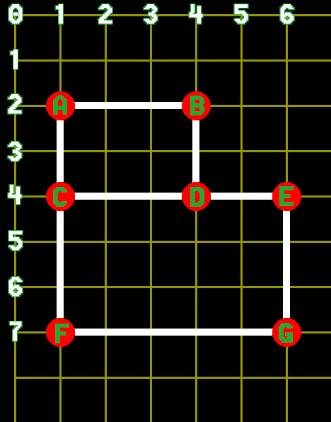
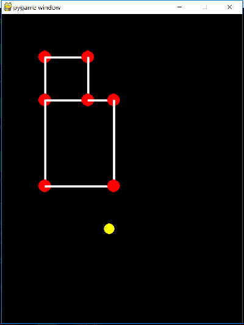

... Pacman Code ...
... Pacman Code ...
Section 2: Node Based Movement
Basics
Like I mentioned in the previous section, Pacman is currently able to move anywhere he wants to move. This isn't the kind of movement we want though. If you've played Pacman before, and I'm sure you have if you're reading this, then you know that he can only move around within a maze. So we need to figure out a way to constrain his movement. When I first wrote a Pacman game I did this by checking for wall collisions. I defined the maze to be a bunch of walls and checked if Pacman was colliding with the walls and basically just keeping him in between the walls. This may seem like a good solution, but it's not. I ran into a lot of issues that I won't discuss here, but I eventually thought of a way better method. That method is defining the maze as a map of connected nodes. That was a huge revelation for me and it solved all of the issues I was facing with collision detection. I'll go over what I mean by a "map of connected nodes" below and we'll generate a simple maze for Pacman to traverse as we're learning the basics of this.
Node Maps
Maybe you've studied data structures, but it's more than likely you haven't. That's fine, you don't need a degree in computer science to understand this stuff, I don't have one. Let's start off with defining what a Node is. A Node is really anything you want it to be. It's a very abstract thing. It's basically an abstract object that contains information. Usually when you're talking about nodes in video games, one of the most important pieces of information is the position of the node. You can also represent a node any way you like, we're going to represent a node as a red circle. Nodes by themselves aren't that interesting. They become way more interesting when you start linking them up together. When we have two nodes that are directly linked together we say that they are neighbors. Being a neighbor to any particular node has nothing to do with proximity. Two nodes can be right next to each other, but if they are not linked together, then they are not neighbors. If two nodes are connected to each other, then they are connected by a path. We'll represent a path by a straight line that joins two nodes together. That's how we can know visually that two nodes are connected to each other. When you have a bunch of nodes linked together in various ways, then that is called a node map. You've probably seen node maps before, they can be used in various ways. For example, representing a network of computers like the internet. Node maps can look like of meshy. Our node map that we'll make for our game will be a simplified version. The main restriction we'll place on our node map is that each node can only have a maximum of 4 neighbors. This is because Pacman can only move in four directions: UP, DOWN, LEFT, and RIGHT. So a node can be connected to four other nodes in those four directions. Also a node can only have a maximum of one neighbor in any one direction. By that I mean a node cannot be connected to two or more nodes to the RIGHT of him, for example. If he is connected to a node on his RIGHT, there can only be one node to his RIGHT.
The image on the right shows 7 nodes labeled A-G. These nodes are connected together with white lines that represent the paths between these nodes. As you can see node A has two neighbors: nodes B and C. Node D has three neighbors: nodes B, C, and E. The numbers on the edges show what row and column each node is in. Node B, for example is in row 2, column 4. We are going to write up some code in order to draw these nodes onto our screen.
Conclusion
So we have a Pacman object that is able to move around the screen. That's at least more exciting than the last section, right? We still don't have a game here, just a yellow circle that responds to certain keys. Right now, Pacman is able to move anywhere he wants on the screen. Last time I checked Pacman was constrained to only be able to move within a maze. In the next section I'm going to show you how to constrain his movement by having him move on a predefined grid.
File Structure
- Pacman
- constants.py
- gamecontrol.py
- nodes.py
- pacman.py
- stacks.py
- vectors.py